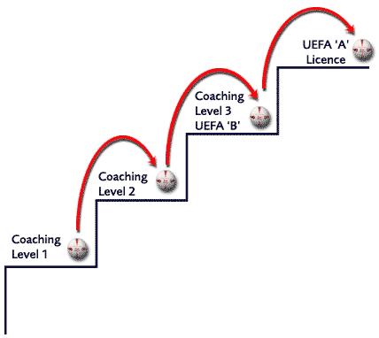

|
The FA Level 1 Club Coach course has been designed by The FA as an introduction for all coaches over the age of 16, with little experience or knowledge about coaching and is the perfect first step on The FA coaching ladder. The course is open entry and participants do not need any experience to take part, just an interest in coaching and the motivation to improve their skills and understanding and a minimum of conversational English.
The FA Level 1 Club Coach qualification is the first rung on the coaching ladder and upon receiving this qualification individuals have the opportunity to progress up through the various FA Coaching qualifications while constantly enhancing their skills and knowledge. We hope that this will not only improve the ability of the individual but also the performance and enjoyment of the team.
Experience is essential for a coach as so much can be learned from the coaching field whether it be working with other coaches and learning from them or coaching different groups of players with mixed abilities.
A successful coach should always be open to new ideas and want to continually improve their individual skills and knowledge of the game. FA courses offer the perfect solution to all coaches who aim to improve their skills, knowledge, experience and enjoyment of the game.

|